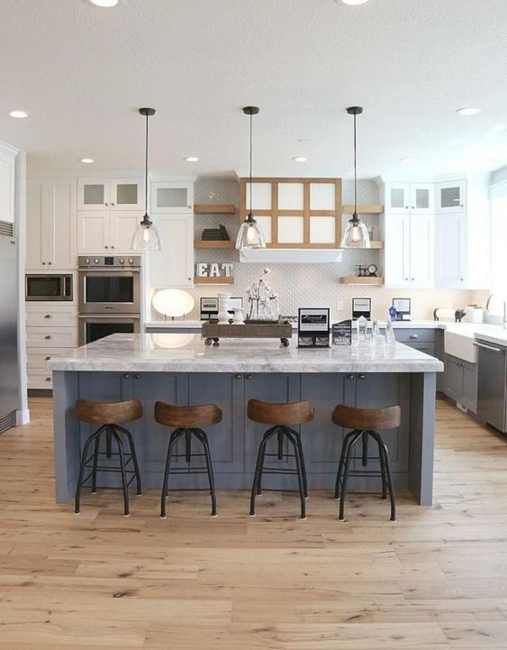
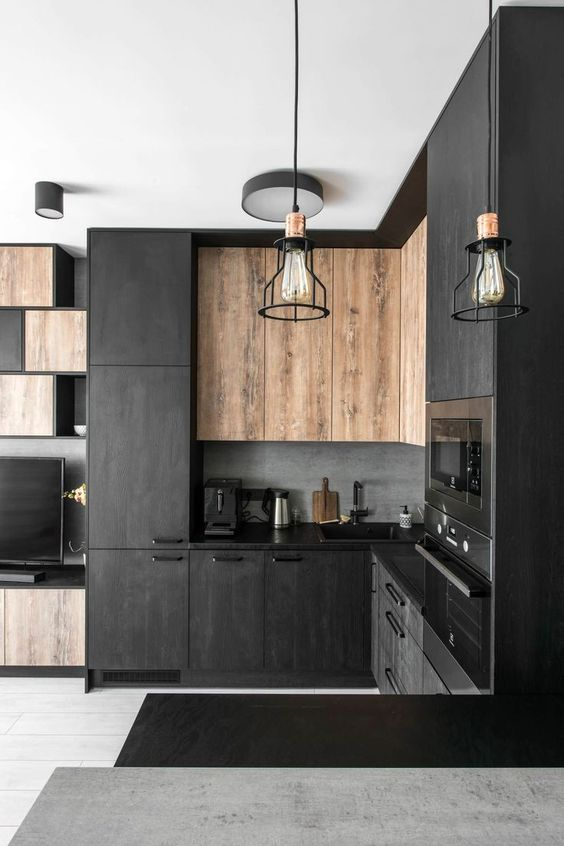
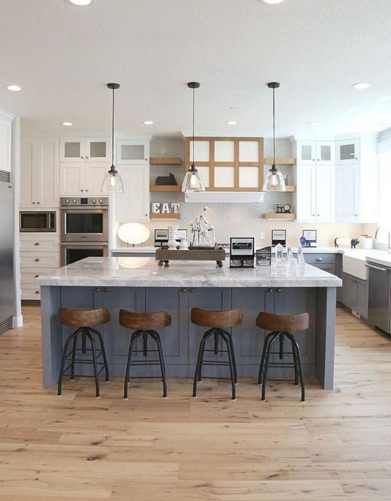
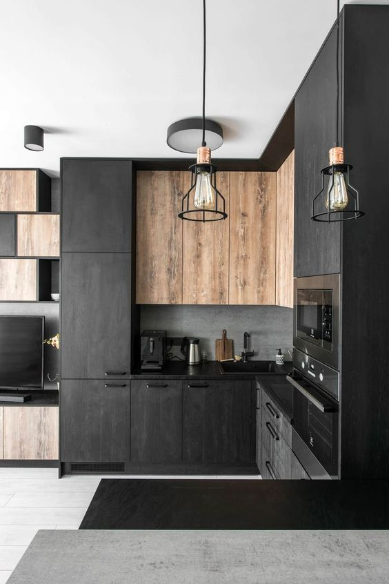

wstęp o nas oferta kontakt
wstęp
Dlaczego kuchnia jest aż tak ważna?
Poświęciliśmy chwilę na zastanowienie się nad tym zagadnieniem- oto pięć powodów, dla których kuchnia jest sercem Twojego domu.Lek dla umysłu, duszy i ciała
Jedzenie jest najlepszą pielęgnacją umysłu, duszy i ciała. Bez pożywienia nie bylibyśmy w stanie przetrwać. Kuchnia jest miejscem przechowywania i przygotowania posiłków oraz składników, których potrzebują nasze ciała. Dzisiaj, gdy jedno na trzech amerykańskich dzieci cierpi na nadwagę lub otyłość, co daje wynik trzykrotnie większy niż w 1963, powinniśmy szczególnie skupić się na jakości naszego jedzenia- nie tylko samych składników i posiłków, ale także na sposobie ich spożywania. Skupienie uwagi na wyglądzie kuchni może uratować Ciebie i Twoje dziecko od zaburzeń odżywiania- piękna kuchnia zachęca do podawania równie pięknych, zdrowych i wartościowych składników, co na dłuższą metę może stanowczo podnieść standard Twojego życia.Kuchnia jako rozrywka
Kuchnia jest również miejscem rodzinnych spotkań, a wspólne spędzanie czasu podczas pieczenia i gotowania może stanowczo polepszyć Wasze relacje- to idealna szansa na śmiech, zabawę i zacieśnienie kontaktów z bliskimi.Ukochane miejsce całej rodziny
W domu jest wiele pomieszczeń, w których członkowie rodziny czują się dobrze i spędzają tam wiele czasu. Może dziadek uwielbia majstrować w garażu, a dzieci bawić się na zewnątrz, ale jedno jest pewne- każdy domownik używa kuchni przynajmniej raz dziennie. Kuchnia nie jest już tylko miejscem przygotowania posiłku. Z biegiem lat stała się centrum rodzinnych spotkań, a dobrze urządzona tylko zachęca do wspólnych eksperymentów kulinarnych i nie tylko- kto powiedział, że w kuchni nie można odrobić zadania domowego lub sporządzić planu obowiązków dla domowników? Pokochaj swoją kuchnię!Dom bez kuchni?
Nie istnieje! Każdy dom ma kuchnię. To niepodważalna potrzeba numer jeden. Posiadanie funkcjonalnej i nowoczesnej kuchni jest atutem, który pomoże domownikom przekształcić przygotowywanie posiłków w przyjemną aktywność, wysyłając w zapomnienie postrzeganie gotowania jako nieprzyjemny obowiązek.Ustala wartość
Ludzie inwestują mnóstwo pieniędzy w ulepszanie swojej kuchni, ponieważ będzie ona najważniejszym pomieszczeniem, gdy nadejdzie pora na sprzedaż domu. Śmiało można powiedzieć, że kuchnia jest jednym z kluczowych elementów ustalenia wartości domu. Dopasowany do Ciebie wystrój kuchni może inspirować Cię i dawać siłę do pokonywania trudów codzienności. Warto mieć na uwadze, że całkowita zmiana wystroju kuchni nie jest jedynym rozwiązaniem. Liczą się szczegóły, one również wpływają na odbiór całości i mogą przynieść równie dobre efekty.O nas
Witamy na stronie flatwhite.com!
Jesteśmy producentem najwyższej jakości mebli kuchennych, od stylu klasycznego, poprzez nowoczesny
oraz loftowy. Firma powstała w 2012 roku.
Naszym celem jest stworzenie kuchni, w której
chciałbyś zostać już na zawsze, kuchni, która pomoże Ci w wykonywaniu obowiązków domowych (i zmieni
je w przyjemność) i która pozosstanie w dobrej kondycji na wiele lat- kuchni marzeń, w której
zakochasz się od pierwszego wejrzenia. Na bieżąco zgłębiamy nowe trendy i pozwalamy im zainspirować
nas do tworzenia nowych projektów. Naszym głównym celem jest stałe rozwijanie swoich umiejętności i
możliwości, aby zadowolić klientów.
Jesteśmy otwarci na indywidualne zamówienia i konsultacje, by zapewnić klientom idealne rozwiązania.
Nasi doświadczeni projektanci sprostają Twoim oczekiwaniom nawet w najbardziej skomplikowanych i
niecodziennych projektach. Dysponujemy manufakturą z najnowocześniejszymi urządzeniami i
rozwiązaniami technologicznymi, które pozwalają nam tworzyć najwyższej jakości meble. Realizujemy
zamówienia w Polsce, jak i za granicą.
Oferta
NASZE PORTFOLIO:
Kontakt
Skontaktuj się z nami!
email:
flatwhite@contact.comtelefon:
+48 123 456 789adres:
flat white furniture 


